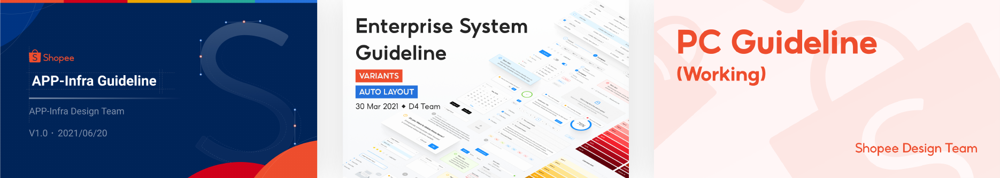
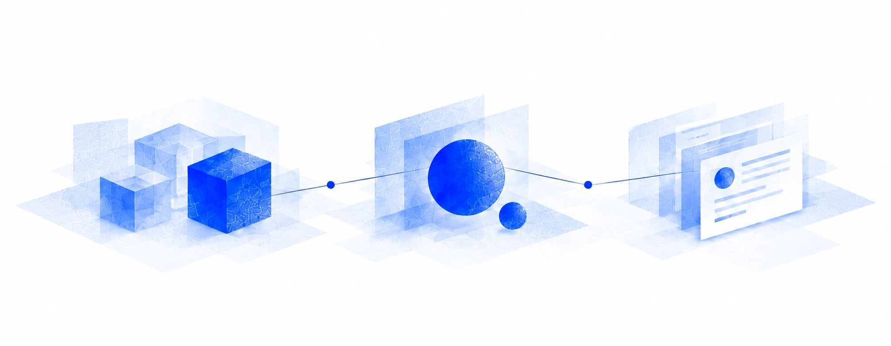
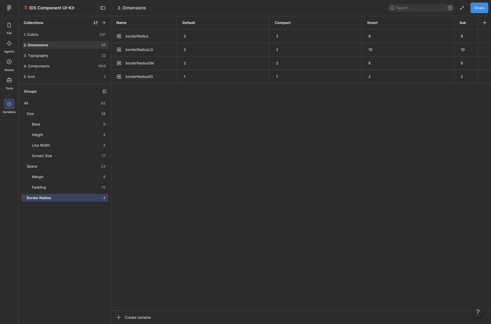
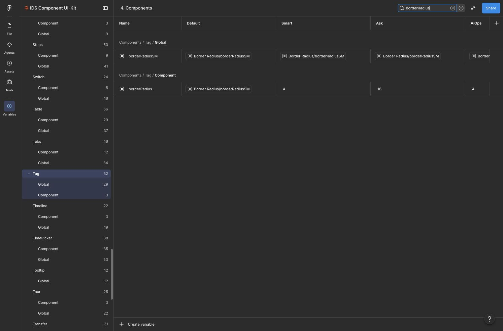
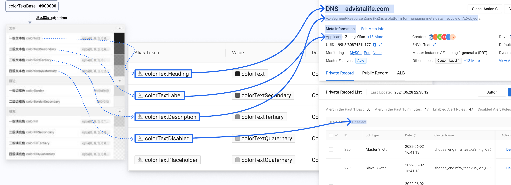

01 / 共同基础
相似任务反复出现，产品差异也真实存在。
共用设计基础的需要，在早期 App Infra 就已经出现。2021 年 Q2 的汇报记录了三套并存的设计规范：App Infra 的指南、新加坡团队的 Enterprise System Guideline，以及 PC Guideline。它们来自不同产品与团队的建设过程，界面习惯、组件基础和维护方式也有所不同。
2021 Q2 汇报 · 第 31 页 · 截图节选

放大查看截图节选 ↗后来 App Infra 与 STO、TechOps 合为 Engineering Infrastructure，产品协作与整合范围进一步扩大。用户需要跨产品完成任务，设计与前端也反复处理相似问题。我主导设计侧建设，与前端共同寻找可维护的公共基础，并为既有产品的适配和业务差异保留空间。
我把建设重点放在三个选择上：通用能力统一到哪一层；已有业务资产怎样接入；团队怎样找到、理解并正确使用这些资产。组件、指南和主题都是围绕这些选择逐步形成的。
展开平台背景与存量差异
2020 年初，我成为 App Infra 的第一位设计师。当时新加坡已有 Space，日志、监控和 K8S 等工具仍有独立入口。很多平台由工程师搭建、供团队自己使用，各自解决着真实问题，也保留了不同阶段的技术选择。
有的使用 Ant Design，有的沿用 Seller Center 的组件体系，也有 Material Design 和大量硬编码的实现。当这些工具逐步进入共同的平台环境，用户需要跨产品完成任务，设计与前端也在反复处理相似问题。原本各自维护的界面，开始需要共同的基础和协作方式。
后来，我们还从新加坡团队接手了一批已有产品及设计文件。这些产品需要继续迭代，已有方案、技术依赖和维护方式也需要被理解。共用系统的建设因此始终伴随着存量产品的适配与迁移。
02 / 资产与知识
从 Components，到能处理业务的资产体系。
建设先从可执行的清单开始。2021 年 Q2，我已和团队把基础组件拆为批次，分别跟踪设计、开发与检查状态，同时收集真实业务中缺少的能力。这样，通用组件的建设与业务扩展需求可以一起讨论。
2021 年 · 组件建设与业务需求
按批次跟踪组件交付
分别查看设计进度、前端开发和检查状态。
2021 Q2 汇报 · 第 36 页 · 截图节选
放大查看截图节选 ↗从具体任务收集扩展需求
记录业务组件、问题描述、提出日期与优先级。
2021 Q2 汇报 · 第 36 页 · 截图节选
放大查看截图节选 ↗两份表来自同一页汇报，分别保留实际建设状态与业务问题。
在对齐技术路线和组件基础后，我们逐步以 Ant Design / React 建立共用基座。后续的资产体系继续从基础组件扩展到业务组件、模板、Patterns 与使用指南：组件提供可复用能力，其他资产帮助团队把它们放进具体业务。

组件能力
- Components（基础组件）
- 通用的基础组件
- ProComponents（高级组件）
- 增强的表单、表格与布局能力
业务与页面资产
- Biz Components（业务组件）
- 面向具体产品场景的组件
- Templates（页面模板）
- 可以取用并修改的典型页面
使用知识
- Design Guides（设计指南）
- 组件的选型与使用判断
- Patterns（业务模式）
- 反复出现的场景及解决方式
我不只定义体系，也直接制作、组织和维护 Figma 资产。底层组件在业务组合中继续保持引用，产品设计师则发展自己场景里的业务组件。Patterns 记录经验，Templates 提供可以直接修改的页面骨架。
进一步展开：选型与资产边界
选型首先要进入工程现实。除了组件能力，React 与 Vue 的技术路线也是当时的取舍因素。团队最终选择 React，并以 Ant Design 建立共用基座，重点考虑工程适配和后续维护。
2021 年的汇报中，我已经把共用基础组件纳入建设规划。同年 10 月的协作记录，明确了统一到 AntD 基础组件的方向。达成这个方向后，还要继续处理各产品的存量差异，逐步推动覆盖。
直接使用 AntD，已经可以解决很多通用界面需求。随着多个团队共同交付、相似场景反复出现，我们还需要决定：哪些能力值得共同维护，哪些差异应交给产品扩展。Infra Design System 的建设围绕这些真实的使用需要逐步展开。
我们保留 AntD 的基础组件与 ProComponent，并在其上扩展面向具体业务的 Biz Component。Patterns 以文章和示例记录可借鉴的经验，Templates 则提供可以直接修改的典型页面。这些不同形式的资产，让团队可以从已有基础出发继续设计。
判断是否共用，我会先区分重复的是外观、交互还是业务语义，再检查变化是否稳定、配置是否容易理解、修改会影响谁。两个页面都使用表格，不意味着应共用同一套业务抽象；例外和维护成本同样决定边界。
03 / Token 与产品定制
用体系化的 Design Tokens，连接共用语义与业务定制。
资产逐渐积累后，跨产品的主题差异需要更系统的配置方式。2024 年 v4 → v5 升级中，我将 Design Tokens 的语义与继承关系转译进 Figma 变量和组件，并与前端对齐修改依据。颜色、尺寸、字体和组件配置各有职责，既支持产品主题，也为具体组件保留局部差异。
2024.11.06 · 我撰写的 v4 → v5 升级材料
放大查看完整原图 ↗颜色、尺寸、字体与组件配置分别维护。Default 的控件高度为 32，Compact 为 28；品牌主题与密度不必混成一个不可拆分的配置。
一个具体例子 · 同一个通用值，两种组件选择
产品层：通用圆角
先约定产品整体采用什么基础值。
Infra Design System UI-Kit · 通用尺寸变量

放大查看完整原图 ↗组件层：Tag 例外
再判断哪些属性需要局部配置。
Infra Design System UI-Kit · 2026-11-01 变量记录

放大查看完整原图 ↗两个配置视角来自当前 UI-Kit；它们展示设计侧绑定，不代表代码自动双向同步。
相同的组件结构，呈现不同产品的主题配置。
Default · Space：通用圆角 2；Tag 圆角 2。组件特例与共用配置分别维护。
继续看：组件属性如何引用公共变量
Infra Design System UI-Kit · 组件变量集合
放大查看完整原图 ↗多数属性继承共用语义，特殊组件再设置局部值。实际 Button 样本也保留高度、内边距、圆角和颜色绑定。Figma 变量体现设计侧配置；它不等于生产代码自动双向同步。
继续看：升级前的技术梳理
在提出升级方案之前，我先完整梳理了 AntD 的 Design Token 派生逻辑。这套模型写在技术文档中：基础变量 Seed 通过算法生成 Map，再映射为具有使用含义的 Alias。它决定了一个设计意图，怎样一步步影响组件中的实际样式。

根据 2024 年升级说明第 6–7、20 页的三层模型重新整理。组件级定制还涉及额外的覆盖规则。
理解模型之后，还要判断改动应该落在哪一层。品牌主色会牵动一组相关色值；标题、描述等语义变量，影响承担相同角色的内容；组件内部的特殊需要，则可能通过局部定制处理。它们的依赖关系，直接影响设计资产和代码怎样一起维护。
我把这套技术模型转译成设计侧的变量结构、语义使用规则，以及与前端确认实现的依据。例如，需要弱化的描述文字应对应描述文字的 Token，使颜色与信息角色、主题配置建立联系。设计决策由此有了能在资产和实现中共同使用的表达。
2024 年 11 月 · v4 → v5 升级说明原图

放大查看完整原图 ↗04 / 使用支持与反馈
把产品中的需求和使用问题，带回系统持续改进。
技术与资产升级之外，系统还需要持续的使用支持。这项工作从早期就与建设同步：2021 年的 UI Feedback 文档已经区分前端开发、发布、设计确认和验收问题，帮助设计与前端逐项跟进实现细节。
2021 年 · 从实现校对到组件入口
逐项校对实现
把发布、确认与待修正问题分别标记。
2021 Q3 汇报 · 第 88 页 · 截图节选
放大查看截图节选 ↗提供统一的组件入口
按组件分类查找基础能力与说明。
2021 Q3 汇报 · 第 88 页 · 截图节选
放大查看截图节选 ↗早期校对与网站记录，说明维护和查阅入口如何与组件建设一起推进。
随着基础组件覆盖推进，支持重点进一步延伸到“怎样选、怎样用”。我持续维护 Figma 资产，主导撰写组件 Design Guides，并收录 Patterns；结合业务任务指导选型、配置与定制。后来的官网改版方案按 Designer、Developer 和 TPM 组织入口，将不同角色所需的组件、指南与资源组织到一起。
Infra Design System 官网改版 · Figma 设计原稿
放大查看完整原图 ↗- 01
理解用途与类型
先知道组件提供什么，各种类型适用于哪些场景。
- 02
通过流程做选择
结合当前目标、操作优先级与风险，找到选型方向。
- 03
继续查阅细节
需要时阅读布局、状态反馈、交互规则和常见问题。
从使用现场回到系统维护
- 01
提供可用基础
维护组件、变量、模板与指南，支持选型和定制。
- 02
进入真实任务
与项目设计师讨论业务结构，在评审和抽查中检查引用与使用问题。
- 03
识别共性与差异
结合业务需求和反馈，判断哪些进入系统，哪些留在产品中。
- 04
持续调整与支持
将判断落实到组件、主题或规则，继续指导团队使用。
Space 后来的业务规则由产品、设计与前端共同推进。我接管已实现的资产并组织维护，团队成员保留各自贡献；这部分与我发起 Infra Design System、推动基础覆盖和底层升级的职责相互衔接。
继续看：跨角色推动落地
Infra Design System 在 Space 的第一轮大规模落地，目标是完成基础组件的全面覆盖。Space 包含许多子产品，各团队有不同的交付节奏和历史实现。组件库建设与真实产品迁移需要一起推进，也需要设计、前端、TPM 和业务团队共同参与。
- 设计侧
- 我主导设计侧的资产与使用规则，组织团队对齐使用方式，并通过指导、评审和日常抽查把关质量。
- 前端共建
- 实现并维护共用组件，与设计共同处理技术约束和迁移问题。
- TPM 与业务团队
- 连接真实需求、迁移节奏与使用场景，推动共用能力进入产品。
组件覆盖之后，继续补齐使用知识。
我也收录了一批 Patterns，为创建编辑、删除、差异比较和反馈等常见任务提供参考。组件指南与场景经验留在官网，团队可以持续查阅；日常的宣导、使用指导和输出抽查，则帮助这些知识进入具体设计。
- 形成的系统资产
- 组件、业务模式、模板、Design Guides 与 Design Tokens 为产品设计提供共同起点。
- 跨产品定制
- 多业务主题与局部配置规则让公共基础进入不同产品，Smart 和 Ask 提供实际设计资产例证。
- 团队支持
- 以指南、业务定制指导、评审和反馈改进，支持设计团队持续使用与扩展。
05 / 新的使用方式
尝试让 AI 使用设计系统
今年，我开始尝试让 AI 使用这套设计系统。我整理基础规范、产品知识和项目上下文，做成 Skill 与 Design MD，分别尝试过 Codex 经 MCP 操作 Figma、Figma Make 生成方案，以及在 React 工程中按既有组件生成界面。
几条路径都有局限：生成的耗时与成本、非标场景的质量、与生产工程的衔接，以及规范之外仍需作出的设计判断。实验没有达到我期待的稳定程度，也让我开始认真看待快速生成背后的设计债。
06 / 持续判断
系统的完整程度，应当服务当下的产品。
当年，分散工具的整合需要一套能被共同维护的基础。今天，AI 与 shadcn 这类可直接修改源码的组件，为新产品提供了更轻的起步方式。对 Space、DataSuite 这样的存量平台，整体换库要承担大量迁移与维护成本；保留可用基础、针对具体问题改进，往往更实际。
Smart、Ask、AIOps 等独立产品，则可以结合已有依赖与新的需求，重新评估共用系统、自有业务资产和轻量组件各自承担什么。Agent 开始直接使用产品，人仍会在关键时刻接管；系统需要保留哪些约定，也应围绕这些具体场景判断。
部分界面细节涉及企业内部信息，可在面试交流中结合 Figma 源文件展开介绍。